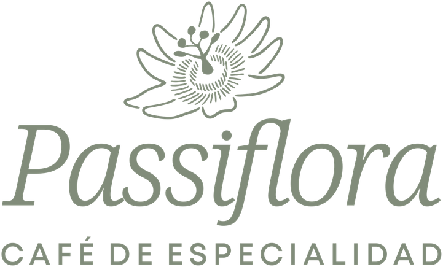

Rosario
Una pausa a base de plantas
La carta de Passiflora.
Café de especialidad y delicias artesanales, a base de plantas.
Referencia para revisar, todavía no es una carta oficial.
Transcripta de la carta enlazada por Passiflora, consultada el 1 de octubre de 2026. El PDF fue modificado el 12 de septiembre, sin fecha de vigencia impresa. Precios y disponibilidad pendientes de confirmación por el negocio.
La fuente usa “$”. La moneda se interpreta como pesos argentinos y también queda pendiente de validación. Las menciones “sin gluten” son de la carta; consultá ingredientes y manipulación con el local.
Según la carta, las infusiones se preparan únicamente con leche vegetal y todas las opciones son a base de plantas.
Los dibujos de bebidas, símbolos, flores y la marca se conservaron de la carta original de Passiflora. Son referencias visuales; no representan proporciones exactas ni garantizan la ausencia de alérgenos.
Ver carta fuente